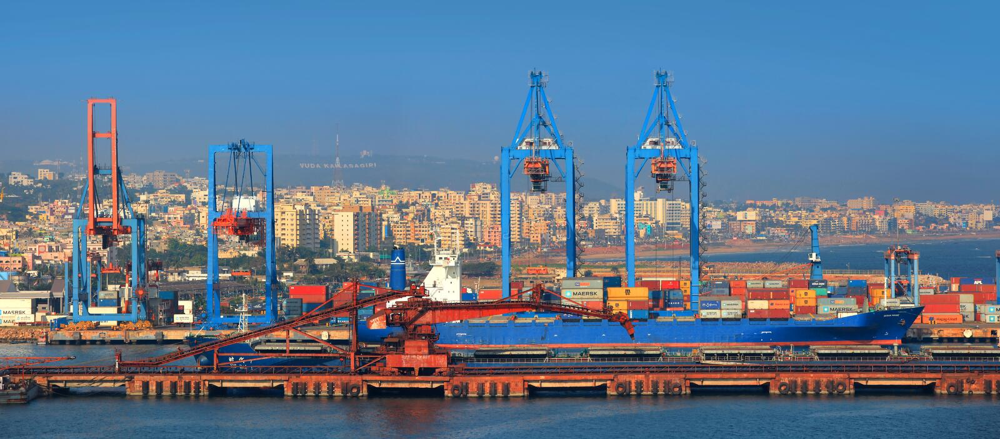
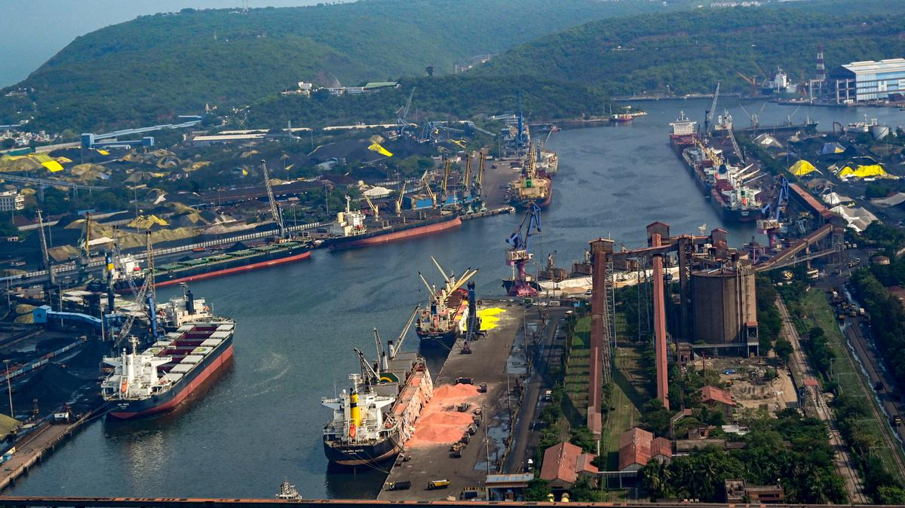

Vizag Port, one of India's premier maritime gateways, is a major hub for international trade and commerce on the eastern coast, strategically located along the Bay of Bengal. This deep-water port handles a diverse range of cargo, including coal, iron ore, and petroleum products, and features state-of-the-art facilities and infrastructure. Renowned for its efficiency and capacity, Vizag Port significantly contributes to the economic growth and development of the region, playing a crucial role in India's maritime industry.
Vizag Port, a major deep-water port on India's eastern coast, is pivotal in handling diverse cargo such as coal, iron ore, and petroleum products. Renowned for its strategic location and advanced infrastructure, it plays a crucial role in facilitating international trade and regional economic growth.
